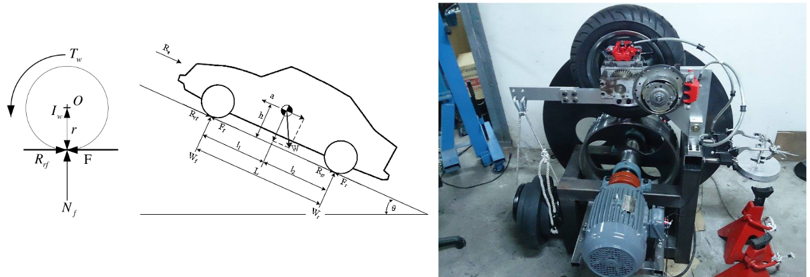

ABS Braking Dynamics Simulation

A mechanical ABS testing platform needed a validated simulation to confirm its behavior matched the real hardware before running experiments. The rig used a motor-driven steel wheel to spin a tire up to a target speed, with loading wheels providing equivalent inertia; once at speed, the motor disengaged and a brake, switchable between a standard brake and an ABS-equipped brake, was applied. I built the dynamic model of the platform in MATLAB, capturing how, without ABS, a large brake force locks the tire while the steel wheel keeps spinning, whereas with ABS the same force decelerates the tire and wheel together without lockup. The PhD student who designed and built the physical platform led the project; I built the simulation to match sim and real results and assisted during experiments.